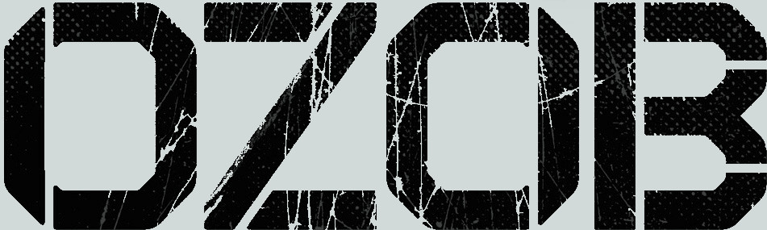

O livro é baseado em um podcast de RPG de mesa do site Jovem Nerd, um personagem apresentado durante esse podcast que te sua história explicada por Leonel Caldela e Deive Pazos, Ozob resumidamente é um replicante(São humanos melhorados, mas com data de validade e que são proibidos na Terra, ele seria um intermediário entre humano e androide) albino, palhaço e especialista em explosivos.
A narrativa começa seis meses após o "nascimento" de Ozob, quando ele está fugindo de Blade Runners(são policiais especializados apenas em caçar replicante)e pelo acaso acaba encontrando-se com uma banda punk enquanto a mesma está fazendo um show de guerrilha, os War Roadies, que são compostos por: Califórnia, especialista em computadores e a líder da banda; Johnny Molotov, o guitarrista e vocalista da banda; e Vivika, que é quem mantém todos eles vivos.
A história se desenrola entre o começo da vida de Ozob, com seus 3 "irmãos" e seu "pai" vivendo nas colônias, até o momento em que ele vem para a Terra e o presente, vivendo com os War Roadies. Talvez se pergunte o que esse livro tem de mais, bom, vamos começar pela descrição. Pense em um autor que não poupa o leitor. No livro temos: canibalismo, tortura, mutilação, uso de drogas, escravidão, cárcere privado, estupro, abuso mental e corporal, opressão capitalista a níveis inimagináveis e um sentimento de impotência. Isso é um resumo, as descrições são bem mais pesadas. O livro é recheado de teorias das conspirações, como o McDonald's modificar a carne do hambúrguer para as pessoas ficarem viciadas nela e inchar os estômagos das pessoas para comerem cada vez mais lixo.
Ozob recebe esse nome, pois o seu criador (Deive Pazos) se inspirou no Bozo, Ozob tem irmãos que também foram inspirados em outros personagens, como Rizzo, um replicante que não sabe diferenciar a realidade de um jogo é baseado no Garoto Juca; Guzzo, Replicante trans, baseado na Vovó Mafalda, e Zatati Ratatá, gêmeos siameses, duas cabeças e três braços (imagine como preferir) grande vilão do passado de Ozob.